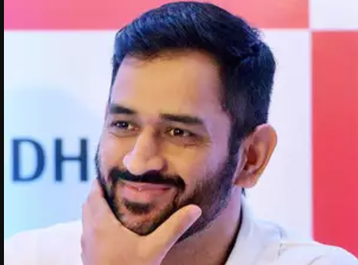

Mahendra Singh Dhoni or M S Dhoni is an Indian cricketer and former captain of the Indian national cricket team; however, he captains the team only in limited-overs format. Nicknamed ‘Mahi’, this spectacular and promising wicket-keeper/batsman filled in the much-awaited void in Team India’s lineup, and since then has proved his worth. With his swashbuckling attitude and unique hairstyle, Mahendra Singh Dhoni has become a popular cricket and marketing icon in India. He is an aggressive right-handed batsman and wicket-keeper.
Dhoni was born on 7 July 1981 in Ranchi, Jharkhand to Pan Singh and Devaki Devi. He has a sister Jayanti and a brother Narendra Singh Dhoni. Originally his family belonged to Almora district of Uttarakhand. He had studied at the DAV Jawahar Vidya Mandir School in Ranchi, Jharkhand. Initially, during his school days, he used to play badminton and football and in fact was the goalkeeper of his football team. Once, he was sent by his football coach to play cricket for a local cricket club. It was in this match that he impressed everyone with his wicket-keeping skills which resulted in getting him a regular post of the wicketkeeper at the Commando Cricket Club. From 2001 to 2003, he worked as a Train Ticket Examiner (TTE) at the Kharagpur Railway Station under South Eastern Railway in Midnapore (W).
Dhoni got married to Sakshi Singh Rawat on 4 July 2010. The couple has a daughter, Ziva who was born on 6 February 2015.
Dhoni married Sakshi Singh Rawat, his schoolmate in DAV Jawahar Vidya Mandir, Shyamali. a native of Dehradun, Uttarakhand, on 4 July 2010. At the time of their marriage, she was studying hotel management and was working as a trainee at the Taj Bengal, Kolkata. After the retirement of Sakshi's father from his tea growing business, their family shifted to their native place, Dehradun.
The wedding took place one day after the couple got engaged. According to Bollywood actress Bipasha Basu, a close friend of Dhoni, the wedding was planned for months and was not a spur of the moment decision. Dhoni became a father on 6 February 2015 to a baby girl named Ziva.
| Relation | Name |
|---|---|
| Father | Pan Shingh |
| Mother | Devki Devi |
| Wife | Sakshi Singh Rawat |
| Brother | Narendra Singh Dhoni |
| Sister | Jayanti Gupta |
| Children | Ziva Dhoni |